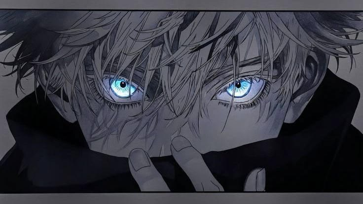
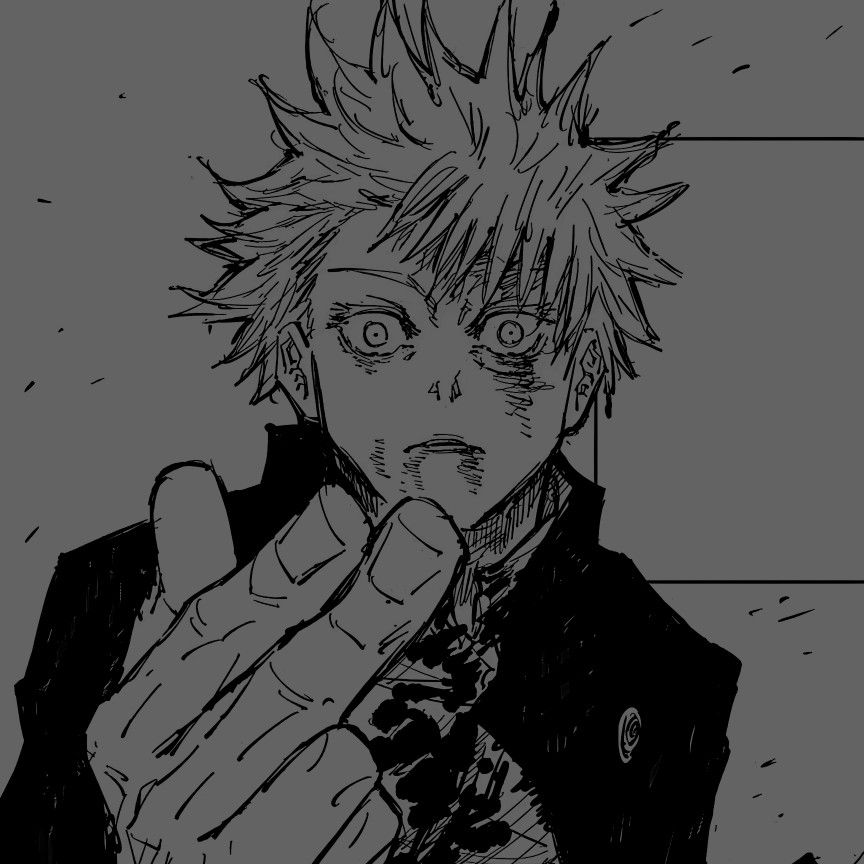

O feitiçeiro mais forte da era moderna.
Satoru Gojo é um dos feiticeiros mais poderosos de Jujutsu Kaisen. Nascido em uma família importante de feiticeiros, ele herdou duas técnicas extremamente raras: os Seis Olhos e o Ilimitado. Durante sua juventude, após enfrentar experiências difíceis ao lado de Suguru Geto, Gojo passou a acreditar que o mundo dos feiticeiros precisava mudar. Como professor, ele se tornou responsável por proteger e treinar jovens feiticeiros, incluindo Yuji Itadori, Megumi Fushiguro e Nobara Kugisaki. Apesar de ser extremamente confiante e brincalhão, Gojo carrega o peso de ser considerado o “mais forte” e luta para criar uma nova geração capaz de transformar o mundo do jujutsu.